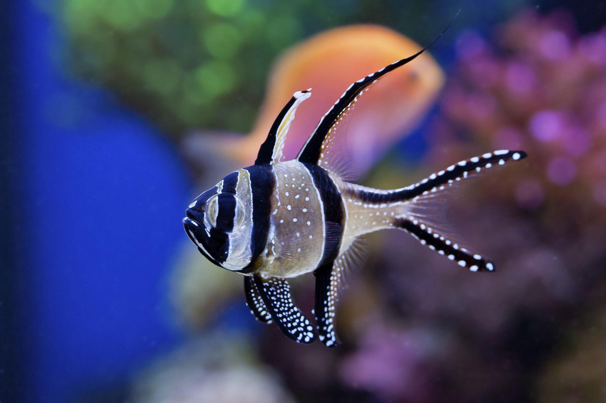
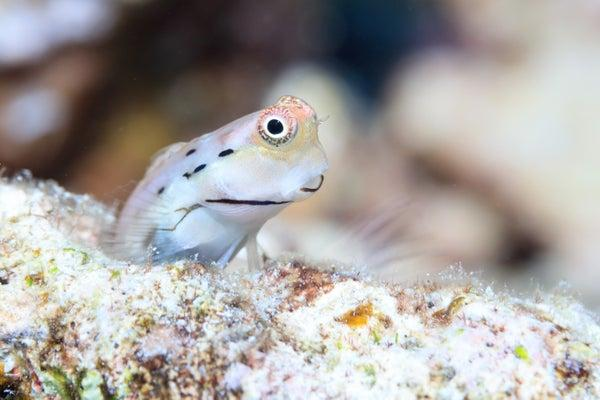
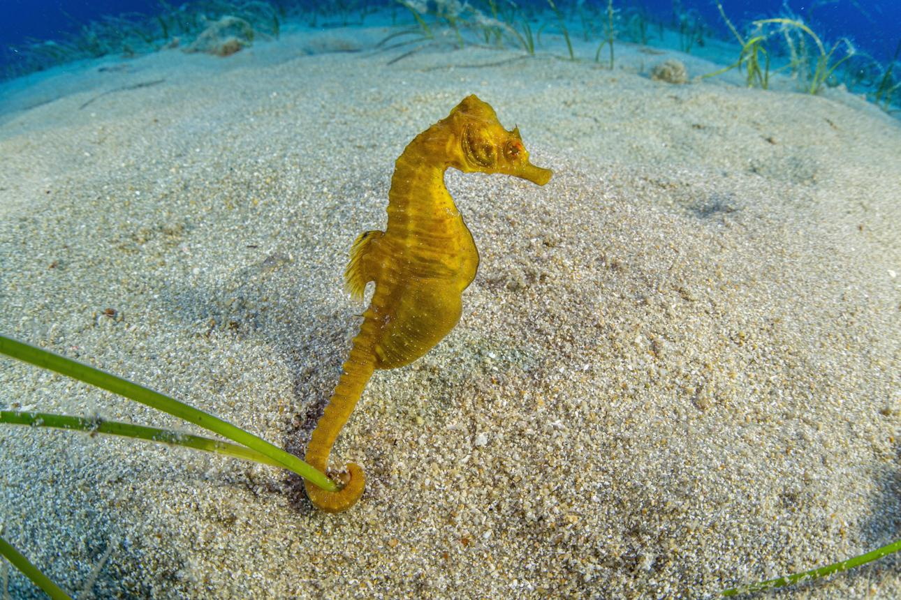
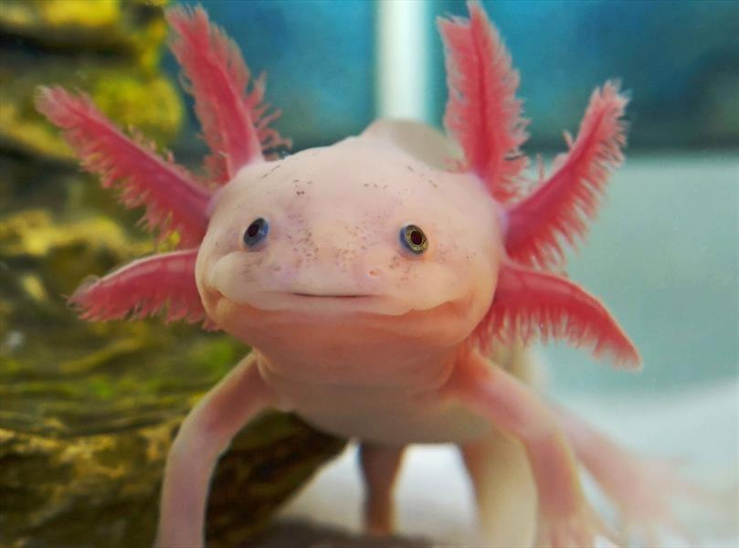

Explore o Aquário
Conheça algumas das espécies que fazem parte do Aquário Coral e descubra as características que tornam cada animal especial. Prepare-se para conhecer diferentes formas de vida do mundo aquático.
SALA 01
Pequenos habitantes do oceano


Peixe-cardeal de Banggai
Pterapogon kauderniPequeno, com listras pretas e brancas e nadadeiras longas. É admirado pela elegância com que nada em grupo.
Góbios e blênios
Espécies de pequeno porte que vivem próximas aos corais. Alguns góbios também estabelecem relações de simbiose com camarões-pistola, compartilhando abrigos na areia.


Cavalos-marinhos
HippocampusConhecidos por seu formato diferente, utilizam a cauda para se prender a algas e outras estruturas. Vivem em ambientes com correntes suaves.
SALA 02
O mundo dos anfíbios
Axolote
Ambystoma mexicanumUma salamandra aquática que mantém características larvais durante toda a vida, como suas brânquias externas. É um animal conhecido por sua aparência curiosa.

Localização
Confira o mapa e encontre os principais ambientes do Aquário Coral.

Conheça nossa equipe
Profissionais dedicados ao cuidado dos animais e à experiência dos nossos visitantes.

beatriz Mendes
Bióloga marinho

Ana Oliveira
Médica-veterinária

Pedro Costa
Aquarista

Mariana Lima
Educadora ambiental

Gabriel Alves
Tratador de animais